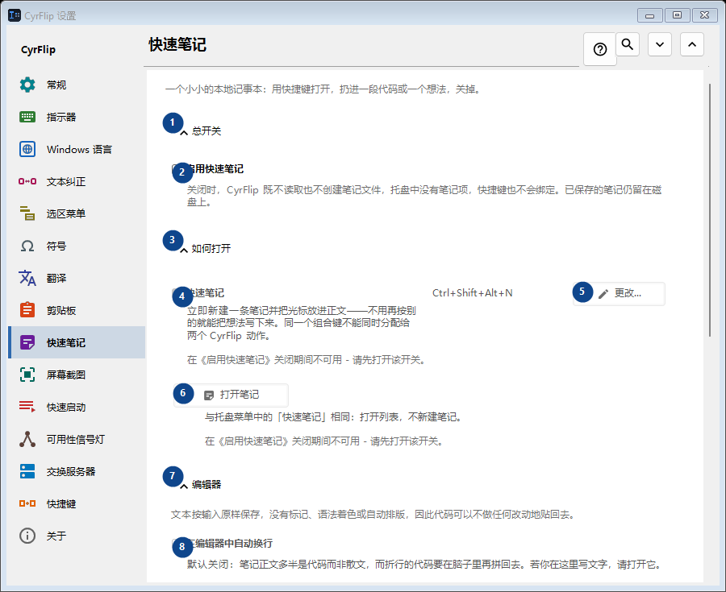
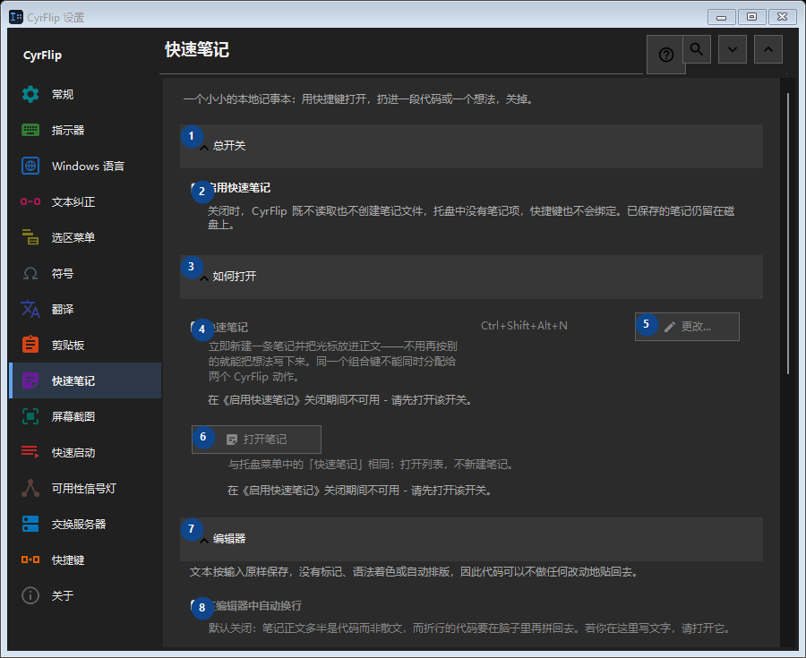

快速笔记
用途
一个小小的本地记事本：用快捷键打开，扔进一段代码或一个想法，关掉。


使用顺序
设置立即生效，无须按固定顺序操作；请使用以下分组。
界面元素
1. 总开关
需要执行上述操作时使用此命令。接受前请阅读确认提示。
你的快捷键2. 启用快速笔记
关闭时，CyrFlip 既不读取也不创建笔记文件，托盘中没有笔记项，快捷键也不会绑定。已保存的笔记仍留在磁盘上。
你的快捷键3. 如何打开
需要执行上述操作时使用此命令。接受前请阅读确认提示。
你的快捷键4. 快速笔记
在《启用快速笔记》关闭期间不可用 - 请先打开该开关。 此控件当前不可用。请先启用相应功能或选择条目。
你的快捷键5. 更改 - 快速笔记
在《启用快速笔记》关闭期间不可用 - 请先打开该开关。 此控件当前不可用。请先启用相应功能或选择条目。
你的快捷键6. 打开笔记
在《启用快速笔记》关闭期间不可用 - 请先打开该开关。 此控件当前不可用。请先启用相应功能或选择条目。
你的快捷键7. 编辑器
需要执行上述操作时使用此命令。接受前请阅读确认提示。
你的快捷键8. 在编辑器中自动换行
在《启用快速笔记》关闭期间不可用 - 请先打开该开关。 此控件当前不可用。请先启用相应功能或选择条目。
你的快捷键9. 导出与存储
需要执行上述操作时使用此命令。接受前请阅读确认提示。
你的快捷键10. 导出时附上日期
在《启用快速笔记》关闭期间不可用 - 请先打开该开关。 此控件当前不可用。请先启用相应功能或选择条目。
你的快捷键11. 把全部笔记导出为 Markdown...
在《启用快速笔记》关闭期间不可用 - 请先打开该开关。 此控件当前不可用。请先启用相应功能或选择条目。
你的快捷键12. 删除全部快速笔记
在《启用快速笔记》关闭期间不可用 - 请先打开该开关。 此控件当前不可用。请先启用相应功能或选择条目。
你的快捷键13. 迁移到另一台电脑
需要执行上述操作时使用此命令。接受前请阅读确认提示。
你的快捷键14. 导出...
一个包含笔记和所选剪贴板历史的公开文本文件：可在任何编辑器或手机上阅读，也可在另一台电脑上导入 CyrFlip。该文件不加密。导入会先显示将添加的内容，且不会删除任何数据。
你的快捷键15. 导入...
需要执行上述操作时使用此命令。接受前请阅读确认提示。
你的快捷键